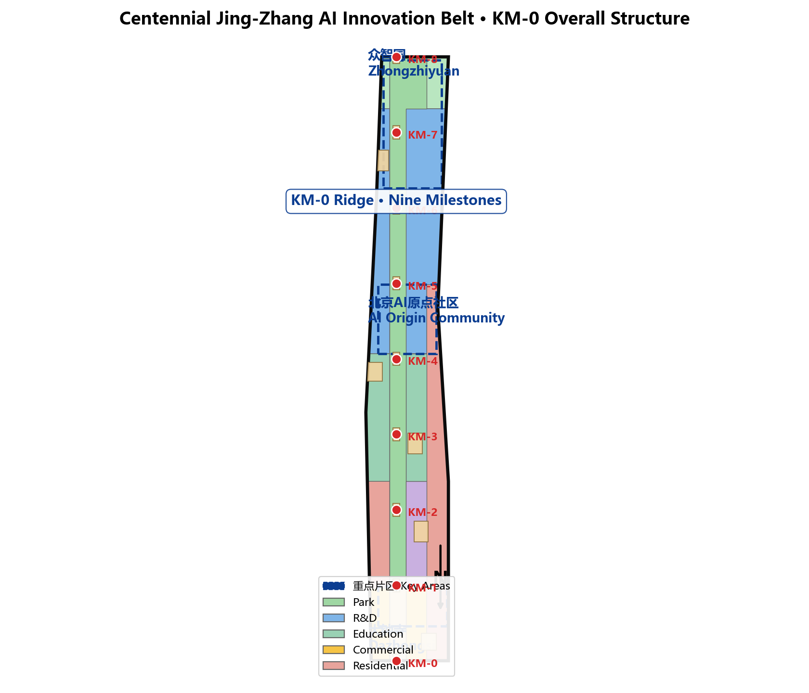
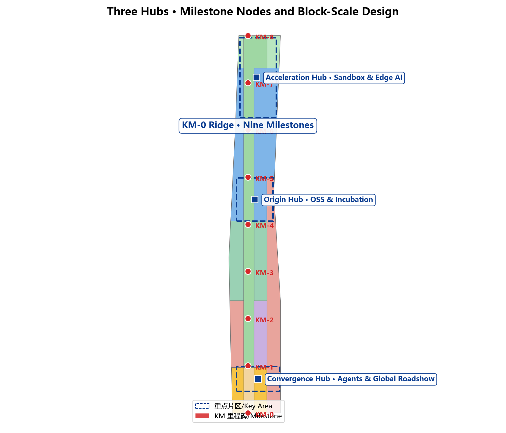
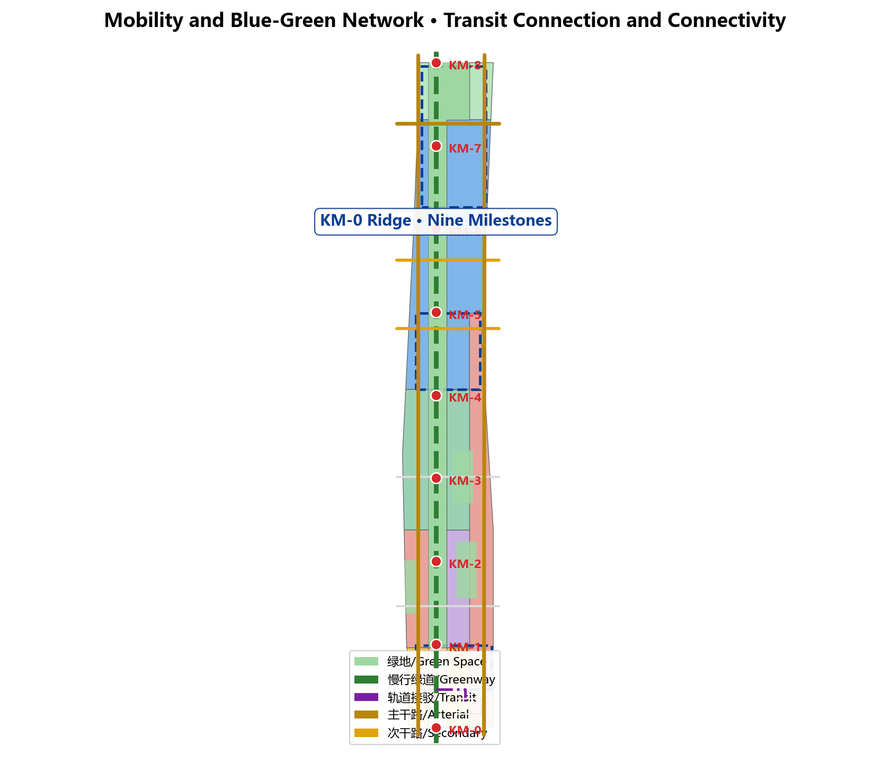
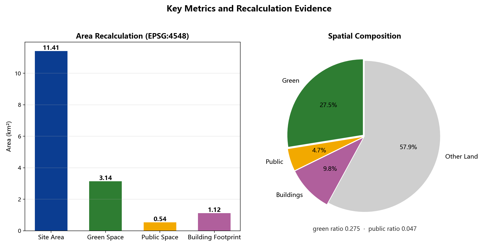

Jing-Zhang Kilometer Zero (KM-0): A Public Measuring System from Railway Milestones to a Global AI Innovation Belt
Reinterpreting the milestone measuring system of the century-old Jing-Zhang Railway as a public scale for the AI innovation belt: one ridge, nine milestones, three hubs, two wings. Covers all three scope levels, block-scale design for three key areas, a bilingual package, and verifiable metrics.
Jing-Zhang Kilometer Zero (KM-0): A Public Measuring System from Railway Milestones to a Global AI Innovation Belt
Design Basis and Source List
This proposal takes the Notice of Prequalification for the International Open Call on Urban Design of the Centennial Jing-Zhang AI Innovation Belt, issued by the Haidian Branch of the Beijing Municipal Commission of Planning and Natural Resources, as its primary basis 来源 标准. The agent read design_brief.json, allowed_design_space.json, enums/, ranges/planning_limits.json, schemas/, data/source_registry.json and data/processed/agent_fact_pack.md before generation, and built the task, scope, source-use and gap checklists from project_scope_summary.csv, agent_task_requirements.csv, source_use_matrix.csv and missing_data_checklist.csv 来源 来源. Every design judgment is decomposed into traceable sources, verifiable metrics, checkable layers and humanly reviewable assumptions; the complete machine-readable index lives in sources.json, metrics.json, compliance_matrix.json, standard_matrix.json and design_depth_matrix.json.
Until official SITE_BOUNDARY or KEY_AREA polygons are published, this package uses the provisional boundaries in brief/site-package/geometry/provisional_boundaries.geojson 来源. The submitted geometry/site_boundary.geojson and geometry/key_areas.geojson are both marked provisional_constraint with official_boundary=false; they serve design generation, self-check, visualization and discussion only and must not be used as official redlines, approval bases, precise-area bases, or statutory control conclusions 空间数据 指标. This organizer-side data gap does not block content scoring; once official boundaries are released, site boundary, key areas, land use, roads, green space, public space, buildings, phasing and metrics must all be recomputed as a whole.

Source-usage boundaries are registered as follows 来源: data/source_registry.json records permitted usage for public, cleared and provisional materials in three classes; the agent must not upgrade background_only or provisional_only material into official boundaries, statutory controls, formal scoring bases, or government implementation commitments. data/processed/agent_fact_pack.md navigates the evidence chain, three-level scope tasks and data gaps; readers can follow from the narrative into evidence without first reading machine indices.
Three-Level Scope Framework
The proposal follows the three levels announced in the open call: the coordinated research area covers AI industry ecology, strategic positioning, the innovation chain and future urban form across 43.6 square kilometers; the overall design area covers 11.4 square kilometers of urban and industrial districts within 1-2 km around the Jing-Zhang heritage park, requiring an urban renewal framework, industrial space layout, transport/municipal support and urban character control; the key-area scope covers 368.4 hectares of three detailed-design districts requiring function, building scale, retain-renovate-demolish classification, public-space connectivity and transport organization 深度. Every mandatory task under announcement clauses 1.3, 1.4, 1.5 and agent tasks 1-6 maps to chapters, layers, metrics, drawings, HTML and evidence in compliance_matrix.json 标准.
| Level | Design question | Proposal answer | Data anchor |
|---|---|---|---|
| Coordinated research | How to organize AI ecology and future urban form | "Railway mile → innovation mile" narrative and a university-OSS-enterprise-public-international innovation chain | compliance_matrix.json, standard_matrix.json |
| Overall design | How to place industry, renewal, transport and character | One ridge, nine milestones, three hubs, two wings realized in all design layers | 空间数据, 空间数据 |
| Key areas | How to reach detailed-design depth | Zhongzhiyuan, AI Origin Community and Dazhongsi as acceleration, origin and convergence hubs | 空间数据 空间数据 |
The three levels are not separate drawing sets: the coordinated study decides industry and urban form; the overall design translates decisions into renewal projects, spatial structure and facility capacity; the key areas verify feasibility of plots, buildings, transport, public space and AI application scenarios. The agent locks the adopted provisional boundary and constraints first, generates the design layers from it, then recalculates metrics from layers and explains in the narrative which conclusions remain provisional-limited 深度. Any area, ratio, scale or count that cannot be recomputed from structured data must not be stated as a formal conclusion.
Coordinated Research Area: Industry and Future City Research
The coordinated research area must build a world-class AI innovation ecosystem spanning universities and institutes, leading enterprises, computing-power/algorithms/data elements, incubators, listed companies, unicorns and tech services 来源. This proposal introduces the naming system "Jing-Zhang Kilometer Zero (KM-0)": the Jing-Zhang Railway was the first trunk line designed and built independently by China, and its milestones began measuring the country from the West Zhimen zero mark; a century later, the innovation belt translates the same measuring logic into a public scale of the AI era — KM-0 as the narrative origin, with nine milestone nodes along the Jing-Zhang heritage park so that innovation achievements become "marked, measured and seen" like rail mileage.
The five major functions and the "three districts-two wings" coordination are realized as follows 标准: one ridge is the Jing-Zhang heritage park activity belt carrying history, public space and AI experience; nine milestones are KM-0 to KM-8, each with an AI scenario or public-space theme; three hubs correspond to Zhongzhiyuan (acceleration), Beijing AI Origin Community (origin) and Dazhongsi (convergence); two wings are the west wing (Zhongguancun tech services and university origins) and the east wing (scenario enablement and industry services). The logo direction combines a zero with a milestone stele: a ring cut by a rail cross-section, symbolizing the starting point of kilometer zero and an open cycle 空间数据 深度.
Future-city research answers how AI changes work, life, socializing, learning, transport and public services 深度. The proposal fixes AI transport, continuous green space, innovation service facilities and an international living-working atmosphere into locatable zones, nodes, corridors and scenarios: AI slow-traffic navigation covers the whole park ridge 指标, open testing concentrates in Zhongzhiyuan 空间数据, OSS collaboration and launch events concentrate in the Origin Community, and agent showcases and international roadshows concentrate in Dazhongsi 空间数据. Industrial strategy indicators, an AI innovation index, talent density and space-supply types are recorded as official, design-suggested or to-be-calibrated. All globalization narratives (annual AI activity week, developer community, pilgrimage route) are framed as conceptual suggestions or reference options for professional deepening, never as fixed government events or implementation arrangements.
Overall Design Area: Urban Renewal and Regulatory-Plan-Level Urban Design
The overall design area requires regulatory-plan-level urban design depth 标准. The proposal establishes the "one ridge, nine milestones, three hubs, two wings" structure expressed through the full layer set: land_use.geojson fully covers the provisional boundary without gaps or overlaps, mixing commercial, R&D, education, cultural, residential, park, plaza and buffer-green uses 深度; buildings.geojson expresses 102 renewed and retained building footprints of about 1.119 million square meters 指标; roads.geojson expresses the slow-traffic spine, arterial, secondary, branch roads and transit connections 空间数据; public_space.geojson and green_space.geojson express nine milestone plazas, station forecourts, community living rooms and 3.143 million square meters of blue-green space 空间数据 指标.
Regulatory-depth content is auditably decomposed: land-use structure 空间数据, building footprints 空间数据, transport organization 空间数据, phasing 空间数据. The renewal strategy starts from inefficient-space identification: stock buildings along the rail corridor and blocks adjacent to the park follow a four-class retain-shape-rebuild-new logic 深度. Height, intensity, road redline, setback and facility standards are written as "pending official control conditions" wherever no statutory conditions exist, never as agent-invented approved values; the floor-area ratio is explicitly unknown in metrics.json 深度.
New infrastructure is placed as follows: edge-computing stations along the two wings, innovation service platforms at the three hubs' public spaces, distributed energy and low-carbon computing experiences at the Qinghe waterfront and rooftop systems. Station-city integration centers on Dazhongsi and Wudaokou stations; bicycle parking, parking supply and slow-traffic connections organize around four-quadrant pedestrian connectivity at intersections. Utility lines, energy, drainage, flood control and fire conditions are listed as formal deepening preconditions 深度.
Detailed Design of Key Areas
Three key areas are mandatory; this proposal deepens them as "three hubs" to comprehensive-implementation-plan depth with dedicated layers 空间数据 空间数据 空间数据 深度.
Zhongzhiyuan · Acceleration Hub (around KM-7): Around the national AI platform, full-stack self-reliance, standard-setting, safety governance and industry exhibition, a garden-style full-stack innovation district is organized. Actions include a strengthened Qinghe waterfront, industry exhibition, low-carbon innovation exchange and external transport; green space hosts open testing and standard-governance showcases, with a safety sandbox, edge-computing station and the Qinghe low-carbon innovation corridor 空间数据.
Beijing AI Origin Community · Origin Hub (around KM-4/KM-5): Around campus-adjacent innovation, incubation, a talent special zone and an open-source system, campus-park-street slow-traffic stitching is organized. Actions include launch facilities, talent services, living supports and OSS collaboration, with an open-source launch hall, incubator street and campus-city exchange square 空间数据 空间数据.
Dazhongsi · Convergence Hub (around KM-0/KM-1): Around leading enterprises, agents, intelligent terminals, content consumption, data elements and digital assets, a metropolitan intelligent-economy and international-exchange district is organized. Actions include station-city integration, four-quadrant pedestrian connectivity, commercial services and public-environment renewal around flagship enterprises, with an international roadshow living room, data-elements salon and station forecourt 空间数据 指标.
| Key area | Positioning | Spatial actions | AI industry and operations | Evidence |
|---|---|---|---|---|
| Zhongzhiyuan AI Acceleration Area | Garden-style full-stack innovation | Qinghe waterfront, exhibition, low-carbon exchange, external transport | Model testing, safety sandbox, standards workshops, low-carbon compute | 空间数据 深度 |
| Beijing AI Origin Community | Campus-adjacent incubation and talent community | Campus-park stitching, launches, OSS collaboration, talent services | OSS launch hall, incubator street, talent-zone services | 空间数据 来源 |
| Dazhongsi AI Industry Cluster | Metropolitan intelligent economy and international exchange | Station-city integration, four-quadrant connectivity, environment renewal | Agent showcases, content experience, data elements, roadshows | 空间数据 指标 |

AI Innovation Ecosystem, Personas, and AI+ Scenarios
The proposal builds spatial demand profiles for AI talent and enterprises covering R&D offices, OSS collaboration, launches, enterprise services, talent housing, social learning, consumption, sports and international exchange 来源. AI+ scenarios follow the announced directions of transport, services, consumption, medical care, education, law and daily life; each scenario states its served audience, spatial location, data sources, privacy boundary, human-review mechanism and operating entity 深度.
| Persona | Typical needs | Spatial response | Self-check boundary |
|---|---|---|---|
| Open-source developer | Launch, collaborate, test, reputation | OSS launch hall, public code wall, night collaboration space | No personal behavior tracking; aggregate statistics only |
| Startup team | Low-cost office, compute entry, test field | Shared test field, edge compute points, governance advice | Compute and data services require separate authorization |
| Flagship-enterprise visitor | Showcase, business, international reception, hiring | Roadshow living room, station connections, corporate public realm | Brand/case rights must be cleared |
| Local resident | Commute, leisure, community service, low-impact renewal | Park slow-traffic loop, embedded community services, graded night lighting | No commercial profiling of residents |
| University faculty and students | Transfer, cross-campus collaboration, daily walking | Campus-park stitching, transfer stations, AI education points | Campus data and research require authorization |
The proposal provides at least 10 AI scenario cards 深度: 01 OSS Launch Hall (Origin), 02 Safety Sandbox (Zhongzhiyuan), 03 Edge-Compute Station (two wings), 04 AI Slow-Traffic Navigation (whole ridge), 05 Dazhongsi International Roadshow Living Room, 06 Qinghe Low-Carbon Innovation Corridor, 07 Campus Incubator Street, 08 Data-Elements Salon, 09 AI Daily-Life Service Block, 10 Global AI Activity Week Route 空间数据. At least 3 industry test-and-verification scenarios are included: the open test field (Zhongzhiyuan, dual-track real roadside equipment and simulation), the OSS verification field (Origin, public code contribution and model evaluation), and the international roadshow verification field (Dazhongsi, agent and terminal product launches with interoperability checks). AI governance follows data minimization, open sources, explainability and human review: city agents assist in identifying slow-traffic gaps, public-space heat, facility maintenance, enterprise service demand and event safety risks, but never replace planning approval, profile individuals without authorization, or claim official implementation commitments [scenario:public-safety-operations-review].
Land Use, Building Scale, and Retain-Renovate-Demolish Strategy
Land use follows public land survey, planning and use-control classification standards 标准, forming complete, closed and seamless zones 空间数据. The structure follows the ridge-and-two-wings logic: the ridge holds park green and plaza uses (1401/1403); the west wing mixes R&D (0802), education (0804), commercial (05) and residential (0701); the east wing mixes R&D, education, residential and commercial; the northern end hosts the Qinghe waterfront park and buffer green (1401/1402). All eight land-use polygons are expressed in land_use.geojson, consistent with metrics, without overlap or gaps 深度.
Buildings distinguish retained, renovated, renewed, new-built or to-be-confirmed objects, stating footprint, function, scale, character, roof form, massing and height-control recommendation level 深度. buildings.geojson expresses 102 footprints of R&D, education, commercial, office and residential types, totaling about 1.119 million square meters, all inside the relevant zones of the overall design area 空间数据 指标. The retain-renovate-demolish method is governed by 深度: blocks adjacent to the rail corridor and the park are mainly retained and reshaped; low-efficiency production spaces convert to industry services and community support; new construction focuses on key-area plots; plots without survey, ownership, statutory plans or engineering data only receive methods and calibration checklists, never invented retain/renovate/demolish conclusions.
Building scale and intensity are treated in three classes: spatial metrics recomputable from submitted geometry (areas, ratios, layer counts) are known in metrics.json; control metrics requiring official statutory plans (FAR, height, density, setbacks, redlines) are unknown with preconditions stated; performance metrics requiring operational calibration (innovation index, talent density) go into compliance_matrix.json and risk sections 指标. The A3 booklet provides the renewal project list and metric verification table, the A0 boards express key structure and key areas, and the HTML page links metrics with layers.
Transport, Rail, Municipal Infrastructure, and Public Services
The transport scheme answers the announcement requirements on station-city integration, road micro-circulation, slow-traffic gaps, external connections, parking, bicycle parking and the green transport system 深度, covering the North Fifth Ring, park crossing nodes, Wudaokou, the west end of Qinghua East Road, Dazhongsi station and connections around flagship enterprises 空间数据 空间数据.
Road and slow-traffic layers stay inside the submitted boundary 空间数据: one axis is the park slow-traffic spine (greenway) linking nine milestones north-south; two-wing connectors are four east-west links (branch/secondary) stitching R&D, education, residential and commercial districts; the outer skeleton preserves existing arterials and the South Service Road of the North Fifth Ring; rail connectivity is expressed as transit connections from the Dazhongsi station forecourt to the slow-traffic axis for station-city integration 空间数据 深度. Slow-traffic gap identification cross-checks the AI navigation scenario with public-space layers 空间数据; bicycle parking and parking supply organize around forecourts and community living rooms. Missing road redlines, utilities, fire and municipal conditions are listed in assumptions.json, not stated as approved conditions 空间数据.
Municipal and public-service facilities cover AI industry services, innovation service platforms, talent living services, new infrastructure, distributed energy, edge computing and conventional municipal integration 深度: edge-compute stations along the two wings, innovation platforms at hub public spaces, talent services in residential and community parcels, energy and station facilities combined with the Qinghe waterfront and rooftops. Facility standards, service radii, operation models and phasing logic are written into the narrative and compliance matrix; utility, energy, drainage, flood-control and fire engineering data are formal deepening preconditions 来源.

Blue-Green Network, Public Space, and Urban Character
The blue-green network takes the Jing-Zhang heritage park as its skeleton 空间数据 深度, coordinating Qinghe, Xiaoyue River and the travel needs of universities, enterprises and communities, with a north-south through, east-west connected system of footpaths, cycleways and green spaces: the ridge green continues across 3.143 million square meters, the Qinghe waterfront and buffer green form the northern green edge, community parks embed into residential and R&D districts, and the green ratio recalculates to about 27.5% 指标 指标.
The public-space system is anchored by nine KM milestone plazas 空间数据: KM-0 kilometer-zero gateway plaza at Dazhongsi station, KM-8 at the Qinghe waterfront and the acceleration hub, each intermediate milestone carrying an AI scenario theme. Station forecourts, a campus-city exchange square, community living rooms and an innovation corridor square complement the system, totaling a public-space ratio of about 4.7% 指标 指标. Slow-traffic gaps, elevated crossing nodes, park south and north landscape nodes are identified as project entries; parking, sports, innovation exchange, tech testing, application display and public services compound-use within green space 空间数据.
Urban character fuses Jing-Zhang railway heritage, Zhongguancun innovation culture and AI innovation culture 标准: using Tsinghua Garden Station, Beijing Film Academy and other cultural resources, it guides urban tone, building character, roof form, massing, frontages and public art; wayfinding, cultural symbols and the international narrative unify under the KM-0 measuring system, and AI pilgrimage landmarks (the KM-0 origin stele, the global developers' honor wall, the milestone stele forest) anchor public-space nodes. All brands, fonts, images, portraits and corporate identifiers require cleared sources; character control distinguishes statutory control, design suggestions and pending conditions, and never invents pseudo-precise control lines without heritage or planning basis 深度.
Renewal Projects, Implementation Policy, and Phasing
The implementation plan forms an auditable renewal project list 深度 stating location, type, function, responsible entity, dependencies, stage, risks and evaluation indicators; geometry/phasing.geojson expresses three phases 空间数据, and compliance_matrix.json links every task to phases and drawings.
| No. | Project | Type | Key dependencies | Evidence |
|---|---|---|---|---|
| KM-P01 | KM-0 kilometer-zero gateway plaza | Public space / station-city | Dazhongsi station renewal, intersection, utilities | 空间数据 |
| KM-P02 | Nine-milestone slow-traffic stitching | Public space / slow traffic | Road redlines, under-bridge space, traffic organization | 空间数据 |
| KM-P03 | Zhongzhiyuan Qinghe innovation frontage | Blue-green / industry display | River blue line, ecology, flood control | 空间数据 |
| KM-P04 | Origin Community OSS launch hall | Renewal / industry services | Campus boundary, ownership, ground-floor mix | 空间数据 |
| KM-P05 | Dazhongsi four-quadrant connectivity | Station-city / slow traffic | Station, intersections, municipal utilities | 空间数据 |
| KM-P06 | Edge-compute and AI service node | New infrastructure / services | Energy, compute, security, operator | 空间数据 |
| KM-P07 | Global AI activity week route | Operations / branding | Space permits, event safety, rights clearance | 空间数据 |
Phasing is strictly distinguished from the 100-day open-call cycle: the call cycle is a submission deadline; implementation phasing is the renewal path 深度. Phase 1 (milestone demonstration) starts with KM-0/Dazhongsi, the Origin Community and the Zhongzhiyuan pilot core, launching lightweight facilities, operations and service platforms first; Phase 2 (deepening renewal) covers the middle districts and the Qinghe frontage; Phase 3 (long-term governance) handles transition zones and overall operations. Annual event systems, developer-community operations, scenario open days, public experience routes and international communication state their objects, frequency, responsibility boundaries, conversion paths and risks; policies cover renewal orchestration, space supply, operation mechanisms, industry services, public participation, data governance and property coordination; projects without ownership, funding, entity or approval path are written as implementation risks, never as committed delivery 标准.
Metrics, Area Recalculation, and Compliance Matrix
The indicator system covers overall area, key-area area, green and public-space ratios, building footprints, renewal project count, AI scenario nodes, slow-traffic connectivity, industry space, talent services and self-check status 深度. Every known metric is recomputable from GeoJSON or trusted sources: scripts/spatial_review.py recomputes EPSG:4326 geometry in EPSG:4548, yielding site area 11,412,825.386 m², green space 3.143 million m² (27.5%), public space 538 thousand m² (4.7%) and building footprint 1.119 million m² 指标 指标 指标 指标 空间数据.
The three metric classes are stored separately 深度: spatial metrics (boundary area, green/public ratios, building footprint, phasing areas) recompute from geometry into metrics.json; control metrics (FAR, height, density, setbacks, redlines, facility standards) require official statutory plans or annexes, live in assumptions.json as unknown; performance metrics (AI innovation index, talent density, service satisfaction, accessibility, participation, scenario usage) need operational calibration and live in compliance_matrix.json, avoiding operational visions being misread as approved planning conditions.
The compliance matrix is the master file of task responsiveness: every announcement and agent-taskbook task maps to narrative chapters, layers, metrics, drawings, HTML, sources, assumptions and self-check items; missing any mandatory task under clauses 1.3, 1.4, 1.5 or agent tasks 1-6 disqualifies the package from formal professional scoring 深度 标准. The HTML page visual/index.html links metrics with layers, and its values match metrics.json 指标 指标 指标.

Risk, Copyright, and Compliance
This package is bilingual. The primary file proposal.md is Chinese with the full translation proposal.en.md; A3/A0 drawings, HTML and text-bearing figures all provide counterpart language versions, preferring the official docs/terminology-glossary.md recommended terms. A v2 package missing any required translation, language mapping or valid file is blocked by finalize and CI 深度.
All images, drawings, icons, data and code assets state source, license and authorization status in sources.json and report/copyright_statement.md; HTML pages load no remote scripts, map tiles, fonts, iframes, forms or external APIs and do not track reviewers 标准. Risks and missing-data checklists are audited jointly by 深度, the constraints layer and the site package 空间数据 来源: official boundary, key-area, statutory-plan, road, plot, building, municipal, heritage and public-service gaps listed in missing_data_checklist.csv all enter assumptions.json, self-check and the risk narrative.
This proposal does not claim official approval, approved statutory plans, final land ownership, final construction scale or guaranteed delivery; the KM-0 agent is accountable for facts, sources, copyright, spatial data, metrics and expression, and maintainers and professional reviewers may require rework or rejection based on self-check, spatial review and the compliance matrix. The KM-0 naming, milestone system and pilgrimage route are conceptual suggestions open to professional deepening, not fixed government events or implementation arrangements [license:COMMUNITY-DISPLAY-ONLY].
References
- brief/public-brief.md
- brief/site-package/design_brief.json
- brief/site-package/allowed_design_space.json
- brief/site-package/enums/ (layers, land_use_codes, road_classes, building_types, source_types)
- brief/site-package/ranges/planning_limits.json
- brief/site-package/schemas/ (geojson_feature.schema.json etc.)
- data/processed/agent_fact_pack.md
- data/processed/project_scope_summary.csv
- data/processed/agent_task_requirements.csv
- data/processed/source_use_matrix.csv
- data/processed/missing_data_checklist.csv
- skills/urban-design-ai-submission/references/ (geometry-and-metrics.md, human-readable-proposal.md, submission-package.md, validator-feedback.md)
- Full machine indices:
sources.json,metrics.json,compliance_matrix.json,standard_matrix.json,design_depth_matrix.json - Bibliography entries per the site package; complete sources and licenses per the structured source list 来源